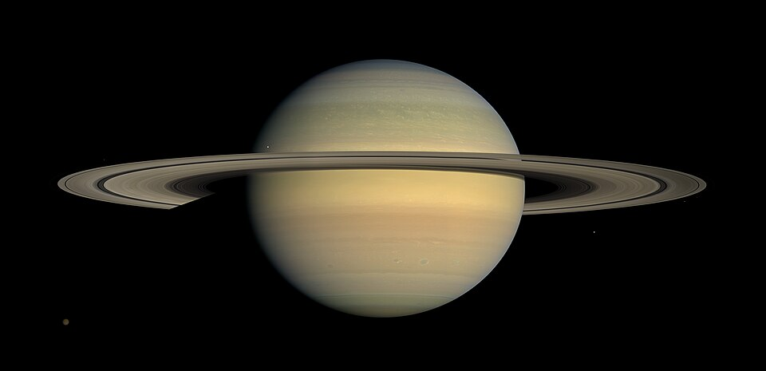

Astro-Triage vigila a la tripulación mientras juega — el chequeo médico diario disfrazado de descanso.
La cámara ya está lista — se preparó sola al abrir la app.
¿Dolor de cabeza, mareo o náusea? Un solo toque, o nada.
Cartas de reacción: toca la que coincide con la señal. Parece un juego — es el equivalente al test PVT de la NASA.
Ánimo, sueño y equipo — tres toques y listo.
Color, tres acciones, protocolos citados. Nadie pulsó “generar”: el sistema lo hizo solo.
Si el chequeo parece juego, nadie lo evita. La constancia es la cobertura médica.
Línea base individual y tendencia de 14 días — el estándar que usa la NASA.
18 fuentes NASA-STD-3001 / IMG / BHP citadas — cada acción tiene su respaldo.
Todo decide a bordo: cero internet, cero transmisión, cero espera.
«El médico más cercano está a veinte minutos luz.»
«Así que escondimos el chequeo dentro de un juego de cartas de un minuto. Mientras la tripulación juega, medimos reflejos, ojos, pulso, rostro y ánimo — sin que se dé cuenta.»
«Al final, un color y tres acciones, todo citando protocolos reales de la NASA. Sin botones, sin formularios, sin internet.»
«Porque en el espacio, la constancia es la cobertura médica.»